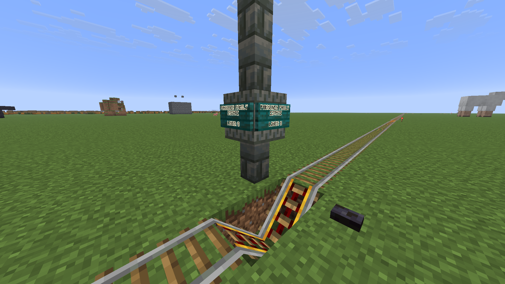

SGTT Regulations
STATIONS
There are multiple rules you have to follow when you build a station.
Naming
- A station can not have multiple names, and it can not have the same name as an unrelated station.
- A good station name is the name of the building or monument or whatever is next to, or featured in the station.
Building
- A station pillar consists of one Tuff Brick Wall, a Chiseled Tuff Brick block on top, with signs on all (at least 3) sides, followed by 2 to 3 more Tuff Brick Walls on top.
- The type of sign has not yet been standardized, however Warped Sign is recommended. (Birch Sign also looks good)
- The station stop consists of 2 dug up blocks next to each other, next to the station pillar, with 2 powered rails in it, connected by a button (of any kind, but blackstone works best).

Example of a well-built station
TRACK LAYOUT CHANGES
LINES